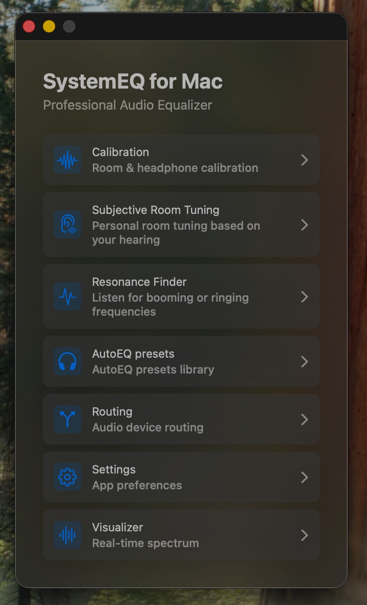

A system-wide parametric equalizer with calibration tools, AutoEQ presets, room tuning and a live MilkDrop visualizer — all running natively on your Mac.
Latest: · free

More than an equalizer — a complete audio shaping suite for macOS.
Switch between simple 10-band or precision 31-band parametric equalizer. vDSP-accelerated biquad filters for low-latency processing.
Built-in SQLite database with presets for thousands of headphones from the AutoEQ project. Import any .txt preset file.
Compensate for your headphones and your hearing through interactive ear-based calibration. Clean or combined modes, 10 or 31-band precision.
Personal room tuning based on your hearing. Test specific frequencies manually and add notch filters for problem resonances.
Automatic sine sweep to identify booming or ringing frequencies in your room or headphones. Mark and tame them with one click.
Pick any input/output device. Live audio level meters, test tone generator, and one-click EQ enable/disable.
Built-in ProjectM/MilkDrop visualizer reacts to your audio in real time. Lock or shuffle presets.
Native CoreAudio (AUHAL) dual-I/O engine with lock-free ring buffers. Optimized for real-time audio.
Full interface localization in English, Italian and Ukrainian. Switch language on the fly.
Optionally remember a preset for each output device, launch at login, or keep SystemEQ in the menu bar only.
macOS doesn't expose a system-wide audio EQ — so SystemEQ uses the BlackHole virtual driver to route, process and output your audio.
All app audio (Spotify, Safari, system sounds) flows into BlackHole 2ch.
The app reads audio from BlackHole using a native CoreAudio AUHAL input.
Your EQ curve is applied in real time via vDSP-accelerated biquad cascades.
Processed audio is sent to your physical output — speakers, headphones, DAC.
Choose a section, then browse its screenshots. Select an image to enlarge it.
SystemEQ is distributed as a free open-source build outside the App Store.
The virtual audio driver SystemEQ uses to capture system audio. Restart your Mac after installing it.
brew install --cask blackhole-2chHomebrew removes the macOS quarantine attribute during installation, so no manual Gatekeeper confirmation is needed.
brew install --cask denzam/systemeq/systemeqDownload from GitHub Releases and move the app to /Applications. Because it is not notarized, right-click it → Open on first launch, or remove the quarantine flag:
xattr -dr com.apple.quarantine "/Applications/SystemEQ for Mac.app"In System Settings → Sound → Output, choose BlackHole 2ch. In SystemEQ, select your real output device, click Enable EQ, and leave the app running.
Open the Xcode project on macOS with Xcode 16.2+ and build for your local Mac.
Everything you might wonder before installing.
SystemEQ for Mac.app from /Applications and set your system output back to your real device in System Settings → Sound. BlackHole can be removed with brew uninstall --cask blackhole-2ch if you no longer need it.Recent releases — see the full history on GitHub.
Native system-audio capture, safer output switching, and unified EQ controls.
Audio reliability, safer output control, and privacy-safe diagnostics.
Auto-switch presets per output, Hide Dock Icon, working Launch at Login, and stronger startup/preset restoration.
SystemEQ is free forever. If it makes your audio better, consider supporting development — completely optional.